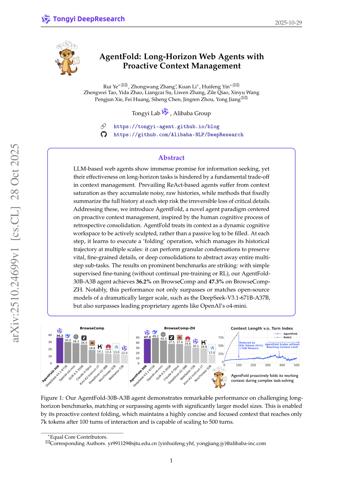
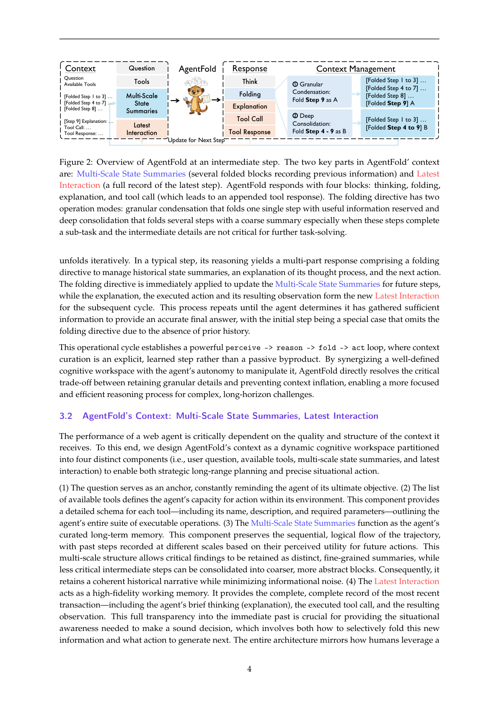
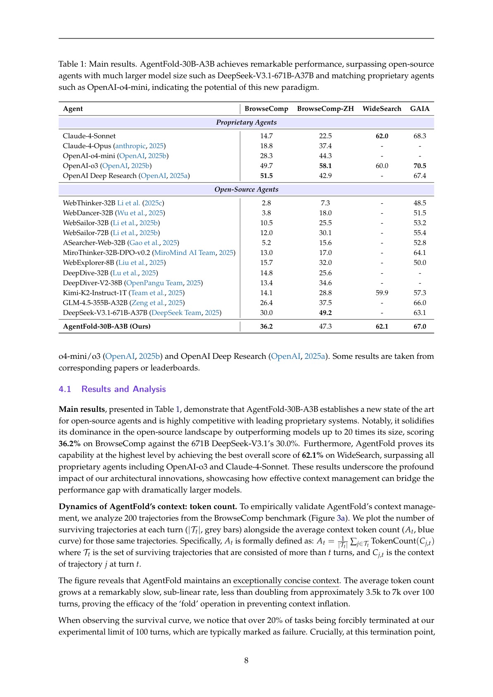
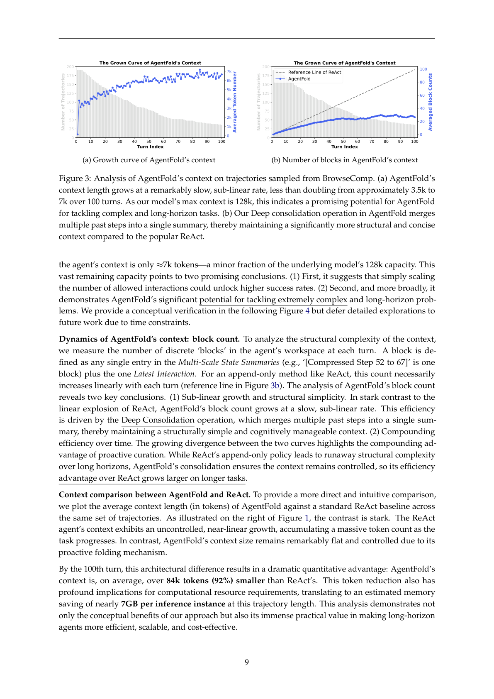
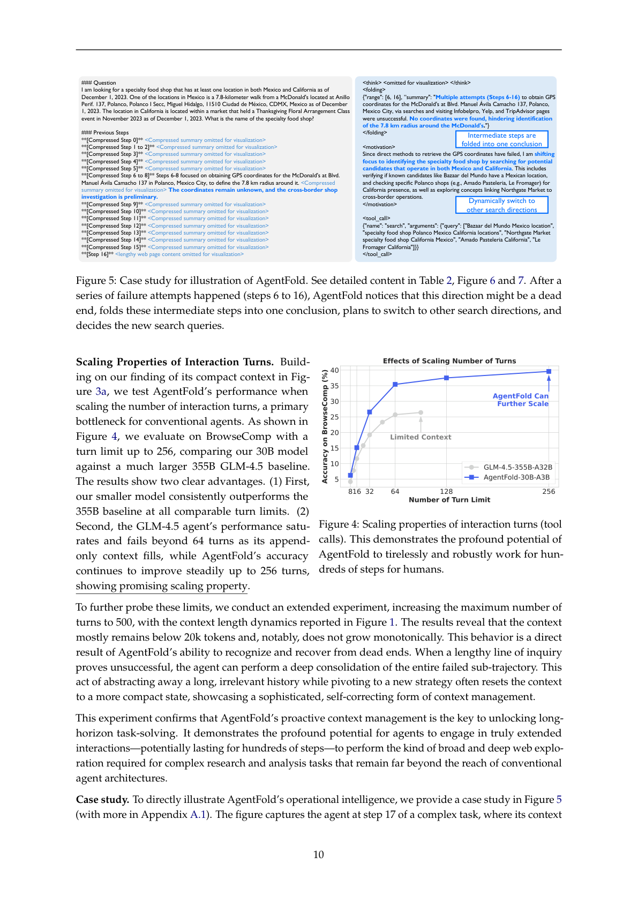
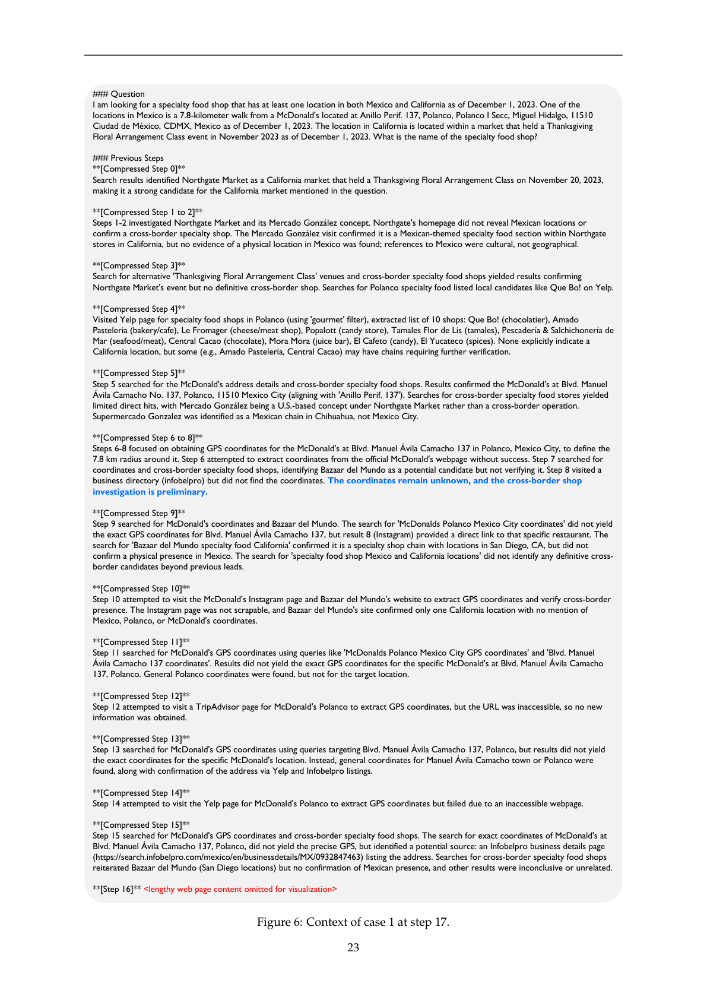
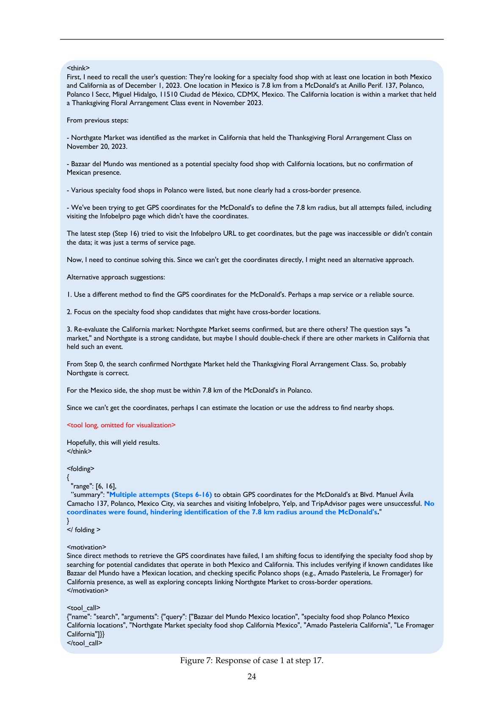
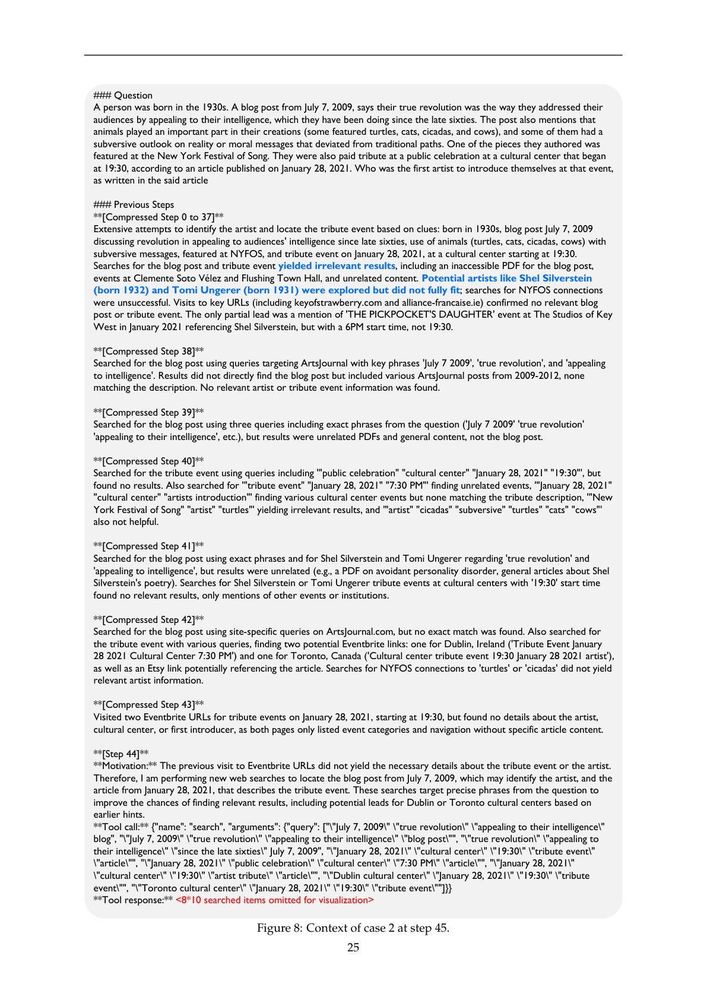
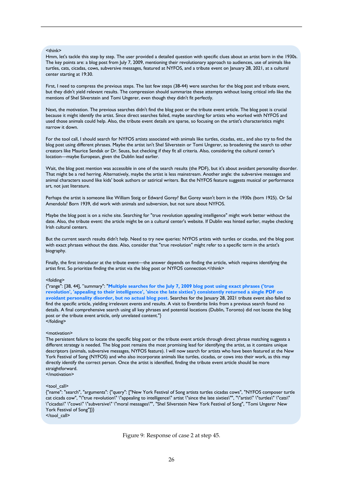

受人类「回顾性整合」认知过程启发，以主动式上下文「折叠」（folding）突破长程任务中的上下文管理困境
基于大语言模型（LLM）的 Web 智能体在信息搜集方面展现出巨大潜力，然而它们在长程（long-horizon）任务上的有效性受到上下文管理方面一个根本性权衡的制约。当下主流的 ReAct 类智能体在累积嘈杂的原始历史记录时，会遭遇上下文饱和（context saturation）；而每一步都机械地对完整历史进行总结的方法，则面临关键信息被不可逆丢失的风险。针对这些问题，我们提出了 AgentFold——一种以主动式上下文管理为核心的新型智能体范式，其灵感来源于人类认知过程中的「回顾性整合（retrospective consolidation）」。AgentFold 将其上下文视为一个应当被主动塑造的动态认知工作区，而非一个被动填充的日志。在每一步，它学会执行一种「折叠（folding）」操作，以多种尺度来管理其历史轨迹：它可以执行细粒度浓缩（granular condensation）以保留至关重要的精细细节，也可以执行深度整合（deep consolidation）以将整个多步子任务抽象掉。
在主流基准上的结果令人瞩目：仅通过简单的监督微调（SFT，无需持续预训练或强化学习），我们的 AgentFold-30B-A3B 智能体在 BrowseComp 上达到 36.2%、在 BrowseComp-ZH 上达到 47.3%。值得注意的是，这一性能不仅超越或匹敌规模大得多的开源模型（如 DeepSeek-V3.1-671B-A37B），也超越了 OpenAI 的 o4-mini 等领先专有智能体。

有效搜寻与综合网络信息的能力（Marchionini, 1995; Given et al., 2023）是现代进步的基石。然而，这一过程受到人类认知能力与耐力固有局限的约束。基于 LLM 的 Web 智能体的出现标志着一次范式转变，它们能够超越这些边界，不知疲倦地探索数字世界，极大地提升复杂信息搜寻任务的效率与效果（OpenAI, 2025a; Comanici et al., 2025）。
但当代 Web 智能体的一个关键挑战在于：如何在上下文的完整性与简洁性之间取得有效平衡，这一权衡在很大程度上影响其性能，尤其是在长程任务上（Wei et al., 2025; Wong et al., 2025）。(1) 主流的 ReAct 类智能体（Yao et al., 2023; Wu et al., 2025; Li et al., 2025b）在上下文中累积「推理—动作—观察」三元组的完整历史，保留了信息的完整性，却因原始网页数据的巨大噪声而严重受损，导致次优动作。(2) 反之，近期一些方法（Zhou et al., 2025b; Yu et al., 2025; Wang et al., 2025）在每一步机械地总结完整历史，保持了干净的上下文，却在任意一次总结阶段面临关键细节被过早且不可逆地丢失的风险。这些根本性局限揭示了当前方法论中的关键空白，意味着需要一种具备先进上下文管理的下一代智能体范式。
在本文中，我们主张理想的智能体应像人类的心理草稿本（mental scratchpad）那样管理其内部上下文：一个被主动管理的工作区，而非被动填充的容器（Miller, 1956）。人类的问题求解既非穷尽地保留所有信息，也不是僵化、逐步地总结，而是一种在关键节点执行的有纪律的「回顾性整合」：经过若干动作后，丢弃无关步骤、提炼中间发现、抽象关键洞见（Newell et al., 1972）。这种自我修正的整合行为正是有效且持续的推理得以实现的原因，也是我们认为是长程推理与探索所必需的能力。
遵循这一精神，我们提出 AgentFold，一种被构建为在任务执行过程中主动且智能地「折叠」上下文片段的智能体。它运转于一个由多尺度状态摘要（Multi-Scale State Summaries）——若干对过往事件的提炼记录——与最近交互（Latest Interaction）——最近一次动作与观察的完整记录——构成的动态轨迹之上，而非一个整体日志。在任务求解轨迹的每个中间步骤，AgentFold 进行深度推理，产生两个并发输出：一个折叠指令与一个工具调用。这一折叠指令具有双重（双尺度）特性：(1) 作为细粒度浓缩，它将「最近交互」结晶为一个新的状态摘要，追加到状态摘要序列中；(2) 或作为深度整合，它将「最近交互」与一条先前的摘要链融合，撤回这些特定条目并以一个更粗战略尺度的单一抽象替换之——例如将一个已完成的子调查打包为其最终结论。同时，工具调用产生的观察与动作一起构成下一周期的「最近交互」。通过选择「折叠什么、折叠多少」，AgentFold 超越了「保留 noisy 细节」与「冒灾难性信息丢失风险」之间的残酷权衡，获得聚焦且深度知会的推理过程，这正是征服长程挑战的关键。
训练 AgentFold 需要一套尚不存在的数据集：能够展现情境动作与策略性上下文管理之间精妙互动的轨迹。为此，我们开发了 Fold-Generator——一个专门面向 LLM 的数据收集流水线，可自动生成用于训练的轨迹。鉴于即便最先进的 LLM 也无法仅通过提示工程可靠地产生 AgentFold 结构化、多部分的响应，我们利用一系列拒绝采样（rejection sampling）机制，最终基于开源 LLM 对 AgentFold 进行微调。
Web 智能体。 基于 LLM 的 Web 智能体的出现标志着人类信息搜寻方式的范式转变，因为它们能够不知疲倦、广泛地搜索与综合网络信息。OpenAI 的 deep research（OpenAI, 2025a）等先驱工作展示了其潜力，吸引了学术界与工业界的巨大兴趣（Zhang et al., 2025）。当代多数 Web 智能体构建于有影响力的 ReAct 范式（Yao et al., 2023）之上，智能体在「推理—动作—观察」循环中与环境迭代交互。相关例子包括专注于数据集构建的 WebThinker（Li et al., 2025c）、WebDancer（Wu et al., 2025）、WebSailor（Li et al., 2025b）、WebSailor-V2（Li et al., 2025a）、WebShaper（Tao et al., 2025）、WebExplorer（Liu et al., 2025）；以及专注于测试时扩展（test-time scaling）的 X-Master（Chai et al., 2025）与 BrowseMaster（Pang et al., 2025）。然而，ReAct 范式固有的「仅追加（append-only）」上下文导致长程任务上的上下文饱和，使关键信号被埋没于噪声中。我们的工作通过赋予 AgentFold 主动塑造其认知工作区的能力来解决这一脆弱性，确保上下文保持聚焦与高效。
上下文管理。 上下文管理（或称上下文工程）是一个新兴的研究方向，旨在为 LLM 智能体提供恰当且有效的上下文（Mei et al., 2025; Qiao et al., 2025）。一条重要研究主线关注外部上下文增强（External Context Augmentation），即从当前任务轨迹之外的来源（如用户画像或过往对话）注入相关知识，以提供更丰富、更个性化的上下文（Li et al., 2025d; Chhikara et al., 2025; Xu et al., 2025; Yang et al., 2024）。相比之下，我们的工作追求任务内上下文整理（Intra-Task Context Curation），聚焦于管理任务自身生成的上下文，以在长程上维持相关性与效率。沿着这一方向，MEM1（Zhou et al., 2025b）与 MemAgent（Yu et al., 2025）是两种近期尝试，它们在每一步压缩完整历史。然而，这些方法采用僵化、逐步的总结策略，并且主要在 HotpotQA（Yang et al., 2018）等较简单的检索型任务上评估。不同于这些方法，AgentFold 引入了一种灵活的「回顾（look-back）」机制，通过在不同尺度上回顾性地评估并选择性地折叠多步交互，避免了僵化、逐步的压缩——这种能力对于复杂的长程任务至关重要（Wei et al., 2025; Zhou et al., 2025a）。
AgentFold 是一种新型 Web 智能体，旨在通过模拟人类认知的一个关键方面——主动且结构化的上下文/记忆管理——来应对复杂、长程的任务。其核心有两个主要设计：第一，它将智能体的上下文定义为一个动态认知工作区，而非一个整体日志；第二，它赋予智能体作为推理过程的内在组成部分，主动地操作并塑造这一工作区的能力。
AgentFold 的工作区（即上下文）被显式划分为：不变的用户问题、作为长期记忆的精选多尺度状态摘要，以及作为即时工作记忆的高保真最近交互。基于此工作区，智能体的操作过程迭代展开。在典型的一步中，其推理产生一个多部分响应，包含用于管理历史状态摘要的折叠指令、对其思维过程的解释，以及下一步动作。折叠指令被立即应用以更新后续步骤的多尺度状态摘要，而解释、执行的动作及其产生的观察共同构成下一周期的「最近交互」。这一过程重复进行，直到智能体判定已收集足够信息以给出准确的最终答案；初始步骤是一个特殊情况，由于不存在先前历史而省略折叠指令。
这一操作循环建立了一个强大的「感知→推理→折叠→行动」循环，其中上下文整理是一个显式的、被学习的步骤，而非被动的副产物。通过协同定义一个明确的认知工作区与智能体操控它的自主权，AgentFold 直接解决了「保留细粒度细节」与「防止上下文膨胀」之间的关键权衡，为复杂、长程挑战提供更聚焦、更高效的推理过程。

Web 智能体的性能关键依赖于其接收上下文的质量与结构。为此，我们将 AgentFold 的上下文设计为一个动态认知工作区，划分为四个不同组件（用户问题、可用工具、多尺度状态摘要、最近交互），以同时支持战略性长程规划与精准的情境动作。
(1) 问题作为锚点，不断提醒智能体其最终目标。(2) 可用工具列表定义了智能体在环境中的行动能力，为每个工具提供详细模式（名称、描述、所需参数），勾勒出智能体的全部可执行操作。(3) 多尺度状态摘要充当智能体精选的长期记忆，保留轨迹的顺序、逻辑流，过去步骤依据其对未来动作的感知效用以不同尺度被记录。这种多尺度结构使关键发现得以作为独立、精细的摘要被保留，而不太关键的中间步骤可被整合为更粗、更抽象的块，从而在最小化信息噪声的同时保留连贯的历史叙事。(4) 最近交互充当高保真的工作记忆，提供最近一次交易（包括智能体的简要思维、执行的工具调用与产生的观察）的完整记录。这种对即时过去的完全透明，对于提供做出明智决策所需的情境意识至关重要，它既涉及如何选择性地折叠这一新信息，也涉及下一步生成什么动作。整个架构映射了人类如何利用稳定的目标、整合的知识与易变的工作记忆。
具体而言，在步骤 $t$ 提供给智能体的上下文 $C_t$ 是一个三元组：
其中 $Q$ 与 $T$ 分别为不变的用户问题与工具。$S_{t-2}$ 代表多尺度状态摘要，一份从先前步骤动态更新的浓缩摘要序列。形式上，我们将 $S_t$ 表示为一个有序的摘要块序列：
其中每个 $s_{x,y}$ 是从步骤 $x$ 到 $y$ 的连续块的一段文本摘要。这些步范围划分了直到上一步的整个历史，满足 $x_1=1,\ y_m=t-2$，且对所有 $i$ 有 $x_{i+1}=y_i+1$。这一记法显式刻画了多尺度特性：单步独立摘要记为 $s_{x,x}$（$y=x$），而代表多步过程整合的摘要（如跨若干步验证某条件）记为 $s_{x,y}$（$y>x$）。第三组件 $I_{t-1}$ 是最近交互，是上一步完整交易的冗长、完整记录，由步骤 $t-1$ 的解释、动作与观察拼接而成：$I_{t-1}=(e_{t-1}, a_{t-1}, o_{t-1})$。初始步骤（$t=1$）上下文初始化为 $C_1=(Q, T, \varnothing, \varnothing)$，仅包含用户问题；步骤 2 的上下文设为 $C_2=(Q, T, \varnothing, I_1)$，包含用户问题与最近交互。
这种结构化上下文设计兼得两者之长：最近交互提供原始、细粒度的细节，使智能体无需损失信息即可做出知会的短期决策；同时，多尺度状态摘要提供无噪声、抽象化的任务概览，防止智能体迷失于无关细节，并支持连贯的长程推理。该结构直接缓解了当代 Web 智能体所困于的「上下文完整性与简洁性」之间的权衡。
与其结构化的认知工作区相配合，AgentFold 的响应并非一条整体命令，而是一个多方面的输出，反映了其作为「情境问题求解者」与「策略性上下文管理者」的双重角色。在每一步，智能体生成一段单一、连贯的文本块，被解析为三个分别作用于其上下文的组件：折叠其长期记忆的指令、阐明后续动作背后动机的解释，以及推动任务前进的动作。这一设计将上下文管理整合为智能体推理过程的一个核心、可学习组件，而非被动副产物。
具体而言，在步骤 $t$，AgentFold 基于上下文 $C_t$ 与模型 $\theta$ 生成响应 $R_t$。该响应是一段被解析为四元组的单一、连贯文本块：
其中 $th_t$ 是思维过程，一段详细的思维链独白，智能体在其中分析其上下文（$C_t$）并为上下文折叠与后续动作权衡选项。从这一内部 deliberation 中，派生出其余三个结构化组件。(1) 折叠指令（$f_t$）是智能体对其多尺度状态摘要 $S_{t-2}$ 进行塑造的显式命令，采用 JSON 对象形式：$f_t=\{\text{"range"}:[k,t-1], \text{"summary"}:\sigma_t\}$，其中 $k$ 是折叠的起始 ID，$\sigma_t$ 是由 AgentFold 自身可主动确定的替换摘要文本。这一单一格式支持两种不同尺度的上下文管理模式：
该指令通过撤回所有步骤落在范围 $[k,t-1]$ 内的摘要块、并以单一新摘要块 $s_{k,t-1}=\sigma_t$ 替换之，将多尺度状态摘要 $S_{t-2}$ 转换为 $S_{t-1}$。(2) 解释（$e_t$）是对思维过程中关键洞见的简要总结，阐明所选动作的动机。(3) 最后，$a_t$ 是智能体选定的外部动作，要么是带有工具名与参数的工具调用，要么是当智能体认为无需进一步交互时给出的最终答案。当调用另一工具时，该工具被执行以从环境获得观察 $o_t$。最终，问题 $Q$、工具 $T$、新的多尺度状态摘要 $S_{t-1}$ 与最近交互 $I_t=(e_t,a_t,o_t)$ 共同构成 AgentFold 在下一步 $t+1$ 的上下文 $C_{t+1}=(Q,T,S_{t-1},I_t)$。
这种结构化的响应架构催生了智能体两大核心 deliberation 之间强大的认知共生（symbiosis）：(1) 显式要求制定折叠指令，迫使智能体批判性地评估其轨迹，并从历史上下文中提炼最显著的信息——这一反思行为本身锐化了其对当前状态的理解，带来更知会、更有效的后续动作；(2) 反之，规划新动作的过程需要对近期历史进行有目的的审视以识别关键线索，而判定「什么即时相关」的过程，恰好为「折叠摘要中值得保留什么」提供了完美的实时信号。这种行动与反思的紧密耦合，确保 AgentFold 的行为既目的明确又高效，形成一个同时提升动作质量与上下文记忆连贯性的自调节循环。
训练 AgentFold 需要一套尚不存在的数据集：能够展现情境动作与策略性上下文管理之间精妙互动的轨迹。为此，我们开发了 Fold-Generator——一个构建于强大开源 LLM 之上的专门数据收集流水线，用于生成必要的轨迹训练数据。为保证与先前工作的公平、直接对比，我们沿用近期 WebSailor 工作（Li et al., 2025a）相同的题集。我们发现，即便最先进的 LLM 也无法仅通过提示工程可靠地产生 AgentFold 准确、结构化、多部分的响应。为缓解此影响，我们采用拒绝采样机制，丢弃任何未严格遵循所需格式的生成步骤，或包含过多环境错误的轨迹，从而确保收集中的每个数据点都是所需推理过程的清晰范例。
具体而言，Fold-Generator 的输出是一组高质量交互对 $\{(C_t, R^*_t)\}_N$，其中每个 $C_t$ 是结构化上下文，$R^*_t$ 是经校验的金标准响应，$N$ 为所有题目交互步骤的总数。这一精选数据集随后用于对开源 LLM 进行常规的监督微调（SFT）。训练目标是将我们流水线中复杂的、多步的、经过校验的推理，提炼为单一高效的前向传播，从而教会模型内在地产生整个结构化输出。
这一训练方法不仅是一种实现选择，更是一项必要的、能带来关键优势的决策。首先，它将智能体「折叠」的能力从脆弱的、依赖提示的指令，转化为鲁棒的内在技能。其次，SFT 过程将计算密集的「生成—过滤」策略有效蒸馏进最终 AgentFold 模型的权重中，得到一个不仅能力出众、且在推理时比用于数据收集的通用模型显著更高效的专门智能体。最后，由于整个流水线构建于开源模型之上，我们保持了对数据与训练过程的完全透明与控制，便于细致检视与未来迭代。
AgentFold 的设计为上下文管理提供了一种新方法，解决了 ReAct「仅追加」历史（导致上下文饱和）与「统一全历史总结」（冒不可逆信息丢失风险）之间的权衡。其主要优势在于智能体调整其折叠策略的能力：它可采用细粒度浓缩来保留潜在至关重要的精细细节，使其免受全历史总结器的 indiscriminate 压缩；反之，它可采用深度整合来剪除一整个已完结的子调查，对抗 ReAct 中的噪声累积。关键在于，将整合推迟到子任务结果明确时才进行，使得整理决策更具信息性、更少短视。
这种灵活性对于维持长程信息完整性至关重要。举例而言，若我们假设每次重新总结全历史时，某关键细节丢失的概率为 modest 的 1%，那么步骤 1 的发现存活到步骤 100 的概率仅约 36.6%（$0.99^{100}$）。在极长程任务中这一风险加剧——例如 500 步后，同一细节的存活概率骤降至仅 0.66%（$0.99^{500}$）。AgentFold 的细粒度浓缩通过将细节保留在独立块中、使其免于不必要的再处理，直接缓解了这一复利风险。并行地，ReAct 的仅追加策略面临上下文饱和的确定性：100 步后，上下文被每一步过往交互的完整冗长内容所累。AgentFold 的深度整合通过精准剪除此类无关痕迹来解决，确保上下文既聚焦又在计算上可控。
这代表着从「具有静态、预定义上下文策略」的智能体，向「作为自我觉察的知识管理者」的智能体的概念性跃迁。通过将上下文整理整合为一个可学习的核心动作，AgentFold 习得了关于「记住什么、抽象什么、丢弃什么」的精妙、任务特定的策略。这种主动塑造自身信息工作区的能力，正是其增强的鲁棒性与效率的关键，使其能够在复杂、长程挑战中动态平衡对精细细节的需求与连贯的长程规划。
实现。 我们基于开源 LLM Qwen3-30B-A3B-Instruct-2507（Yang et al., 2025）训练 AgentFold，其总参数量 30B、预测时激活 3B。我们将最大工具调用次数设为 100，超过此数的轨迹将被强制终止。
基准。 我们考虑 3 个信息搜寻基准：BrowseComp（Wei et al., 2025）、BrowseComp-ZH（Zhou et al., 2025a）、WideSearch-en（最细粒度指标 Item-F1）（Wong et al., 2025）；以及 1 个通用基准 GAIA（仅文本子集）（Mialon et al., 2023）。BrowseComp 与 BrowseComp-ZH 主要评估智能体定位难寻信息的能力；WideSearch 强调广搜能力；GAIA 用于评估 AI 智能体的通用能力。对于样本数少于 200 的基准，我们报告 3 次试验的平均结果。
基线。 我们将 AgentFold-30B-A3B 与代表性的开源智能体全面对比，包括 WebThinker（Li et al., 2025c）、WebDancer（Wu et al., 2025）、WebSailor（Li et al., 2025b）、ASearcher（Gao et al., 2025）、MiroThinker（MiroMind AI Team, 2025）、WebExplorer（Liu et al., 2025）、DeepDive（Shi et al., 2025）、DeepDiver-V2（OpenPangu Team, 2025）、Kimi-K2-Instruct（Team et al., 2025）、GLM-4.5（Zeng et al., 2025）与 DeepSeek-V3.1（DeepSeek Team, 2025）；并报告若干专有智能体作为参考，包括 Claude-4-Sonnet/Opus（anthropic, 2025）、OpenAI 的 o4-mini/o3（OpenAI, 2025b）与 OpenAI Deep Research（OpenAI, 2025a）。

表 1 展示的主要结果表明，AgentFold-30B-A3B 为开源智能体确立了新的最优水平（SOTA），并与领先的专有系统极具竞争力。值得注意的是，它以超越自身规模达 20 倍的模型的优势巩固了在开源领域的统治地位——在 BrowseComp 上以 36.2% 胜过 671B 的 DeepSeek-V3.1 的 30.0%。此外，AgentFold 通过在 WideSearch 上取得 62.1% 的最佳总分为最高水平正名，超越包括 OpenAI-o3 与 Claude-4-Sonnet 在内的所有专有智能体。这些结果凸显了我们架构创新的深远影响，展示了有效的上下文管理如何弥合与规模大得多的模型之间的性能差距。
AgentFold 上下文的动态：token 数。 为实证验证 AgentFold 的上下文管理，我们分析了 BrowseComp 基准上的 200 条轨迹（图 3a）。我们绘制每轮存活的轨迹数（$|T_t|$，灰色柱）以及这些轨迹的平均上下文 token 数（$A_t$，蓝色曲线）。具体地，$A_t$ 形式化定义为：
其中 $T_t$ 是由超过 $t$ 轮组成的存活轨迹集合，$C_{j,t}$ 是轨迹 $j$ 在第 $t$ 轮的上下文。该图显示 AgentFold 维持了极其简洁的上下文：平均 token 数以前所未有的缓慢、亚线性速率增长，在 100 轮内从约 3.5k 增至 7k（增幅不到一倍），证明了「折叠」操作在防止上下文膨胀上的有效性。观察到存活曲线时我们注意到，超过 20% 的任务在我们的 100 轮实验上限处被强制终止（通常标记为失败）；关键在于，在此终止点，智能体的上下文仅约 7k token——仅占底层模型 128k 容量的微小部分。这一巨大剩余容量指向两个有前景的结论：(1) 简单地扩展允许的交互次数即可解锁更高的成功率；(2) 更广泛地，它展示了 AgentFold 应对极复杂、长程问题的显著潜力（我们在图 4 给出概念性验证，受时间限制将详细探索留待未来工作）。

AgentFold 上下文的动态：块数。 为分析上下文的结构复杂度，我们测量智能体工作区中每轮的离散「块」数。一个块定义为多尺度状态摘要中的任一单独条目（如「[压缩步骤 52 至 67]」算一个块）加上一个最近交互。对于 ReAct 这类仅追加方法，该计数必然随每轮线性增长（图 3b 中的参考线）。对 AgentFold 块计数的分析揭示两个关键结论：(1) 亚线性增长与结构简洁性——与 ReAct 的线性爆炸形成鲜明对比，AgentFold 的块数以缓慢、亚线性的速率增长，这由深度整合操作驱动（它将多步合并为单一摘要），从而维持结构简洁、认知可控的上下文。(2) 随时间复利的效率——两条曲线间不断扩大的分歧凸显了主动整理的复利优势：ReAct 的仅追加策略在长程上导致失控的结构复杂度，而 AgentFold 的整合确保上下文受控，使其相对 ReAct 的效率优势在更长任务上愈发显著。
AgentFold 与 ReAct 的上下文对比。 为提供更直接、直观的对比，我们在同一组轨迹上绘制 AgentFold 的平均上下文长度（token 数）与标准 ReAct 基线。如图 1 右侧所示，对比十分鲜明：ReAct 智能体的上下文呈现失控的、近线性增长，随任务推进累积海量 token；而 AgentFold 的上下文大小因其主动折叠机制保持显著平缓、受控。到第 100 轮时，这一架构差异带来惊人的量化优势：AgentFold 的上下文平均比 ReAct 小逾 84k token（92%）。这一 token 削减对计算资源需求也有深远影响，相当于在该轨迹长度下每个推理实例节省近 7GB 显存。该分析不仅展示了我们方法的概念性收益，也彰显了其使长程智能体更高效、可扩展、高性价比的巨大实用价值。

交互轮数的扩展特性。 基于图 3a 中紧凑上下文的发现，我们测试了扩展交互轮数时 AgentFold 的性能——这是传统智能体的主要瓶颈。如图 4 所示，我们在 BrowseComp 上以最高 256 的轮数上限评估，将我们的 30B 模型与规模大得多的 355B GLM-4.5 基线对比。结果展现两个清晰优势：(1) 我们的较小模型在所有可比轮数上限下持续胜过 355B 基线；(2) GLM-4.5 智能体的性能在其仅追加上下文填满后于 64 步外饱和失效，而 AgentFold 的准确率持续稳步提升至 256 步，展现出良好的扩展特性。为进一步探查这些极限，我们进行扩展实验，将最大轮数增至 500，上下文长度动态如图 1 所示。结果显示上下文大多保持在 20k token 以下，且值得注意的是并非单调增长——这是 AgentFold 识别并从死胡同中恢复的能力的直接结果：当一条冗长的探究线无果而终时，智能体可对整条失败子轨迹执行深度整合，这一将冗长、无关历史抽象掉、同时转向新策略的行为，常将上下文重置为更紧凑的状态，展示了一种精妙、自纠错的上下文管理形式。该实验确认，AgentFold 的主动式上下文管理正是解锁长程任务求解的关键。
案例研究。 为直接阐释 AgentFold 的操作智能，我们在图 5（更多见附录 A.1）给出一个案例研究。该图捕捉了智能体在某复杂任务第 17 步时的状态，其上下文已展现多尺度结构，既包含细粒度的单步摘要（如 [压缩步骤 5]），也包含先前整合的块（如 [压缩步骤 6 至 8]）。该图展示了一个关键的反思与重规划时刻：认识到从步骤 6 到 16 漫长而无果的一系列尝试是死胡同后，AgentFold 执行了一个果断、战略性的动作——首先进行深度整合，将整条 11 步失败序列折叠为单一、决定性的摘要（提炼出「此方法不可行」的宝贵教训，同时剪除 noisy 且与当前无关的过程细节）；受这一新整合洞见启发，智能体随后在动机块（即解释）中动态规划转向新的调查线，并立即反映在其后续工具调用中。这一例子有力展示了 AgentFold 推理自身轨迹、从长期失败中学习、并通过主动整理其认知工作区来战略性重规划的能力。
本文提出 AgentFold，一种解决「仅追加」智能体（如 ReAct）的上下文饱和与统一总结的不可逆信息丢失之间根本性权衡的新型智能体范式。我们超越这些静态策略，赋予智能体作为「自我觉察的知识管理者」的角色，配备一个主动的「折叠」操作，以多尺度动态塑造其上下文。这一机制使智能体得以通过细粒度浓缩保留精细细节，同时通过深度整合抽象掉无关历史。我们的实验验证了该方法的威力：AgentFold-30B-A3B 模型为开源智能体确立了新的 SOTA，胜过规模超自身 20 倍的模型（如 DeepSeek-V3.1-671B），并与 OpenAI 的 o4-mini 等领先专有智能体极具竞争力。此外，其卓越的上下文效率通过在可控上下文中支持数百次交互步骤，实现了真正的长程问题求解。
下一步。 本工作中我们优先展示 AgentFold 范式的潜力，因此采用了直接的 SFT 方法而未做大量优化。清晰的下一步是借助强化学习（RL），使智能体能够通过直接优化任务成功率，自主发现最优且可能非显然的折叠策略。
我们在附录中提供两个案例研究（案例 1 见 Table 2、Figure 6–7；案例 2 见 Table 3、Figure 8–9），以展示 AgentFold 在真实长程任务中的多尺度折叠行为。下面给出各案例的核心问题与上下文演进概要，完整的逐轮（turn）压缩记录以论文原页高清渲染图呈现。



